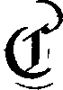
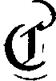
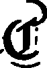
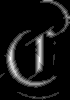
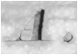
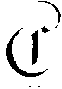
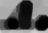

Morphology
Last modified: July 14, 2022
Contents
despeckle
despeckle (int(1, 100) cc_size)
| Operates on: | Image [OneBit] |
|---|---|
| Category: | Morphology |
| Defined in: | morphology.py |
| Author: | Michael Droettboom and Karl MacMillan |
Removes connected components that are smaller than the given size.
- size
- The maximum number of pixels in each connected component that will be removed.
This approach to finding connected components uses a pseudo-recursive descent, which gets around the hard limit of ~64k connected components per page in cc_analysis. Unfortunately, this approach is much slower as the connected components get large, so size should be kept relatively small.
size == 1 is a special case and runs much faster, since it does not require recursion.
Example 1: despeckle(15)
 

dilate
Image [OneBit|GreyScale|Float] dilate ()
| Operates on: | Image [OneBit|GreyScale|Float] |
|---|---|
| Returns: | Image [OneBit|GreyScale|Float] |
| Category: | Morphology |
| Defined in: | morphology.py |
| Author: | Michael Droettboom and Karl MacMillan |
Morpholgically dilates the image with a 3x3 square structuring element.
The returned image is of the same size as the input image, which means that border pixels are not dilated beyond the image dimensions. If you also want the border pixels to be dilated, apply pad_image to the input image beforehand.
Example 1: dilate()


Example 2: dilate()

dilate_with_structure
Image [OneBit] dilate_with_structure (Image [OneBit] structuring_element, Point origin, bool only_border = False)
| Operates on: | Image [OneBit] |
|---|---|
| Returns: | Image [OneBit] |
| Category: | Morphology |
| Defined in: | morphology.py |
| Author: | Christoph Dalitz |
Performs a binary morphological dilation with the given structuring element.
Note that it is necessary to specify which point in the structuring element shall be treated as origin. This allows for arbitrary structuring elements. Examples:
# same as image.dilate()
structure = Image(Point(0,0), Point(2,2), ONEBIT)
structure.fill(1)
image = image.dilate_with_structure(structure, Point(1,1))
# same as image.erode_dilate(3,0,0)
structure = Image(Point(0,0), Point(6,6), ONEBIT)
structure.fill(1)
image = image.dilate_with_structure(structure, Point(3,3))
The implementation is straightforward and can be slow for large structuring elements. If you know that your structuring element is connected and its origin is black, you can set only_border to True, because in this case only the border pixels in the image need to be considered which can speed up the dilation for some images (though not for all).
The returned image is of the same size as the input image, which means that border pixels are not dilated beyond the image dimensions. If you also want the border pixels to be dilated, apply pad_image to the input image beforehand.
References:
A proof that only the contour pixels need to be dilated for connected structuring elements containing their origin is given by Luc Vincent in Morphological Transformations of Binary Images with Arbitrary Structuring Elements, Signal Processing, Vol. 22, No. 1, pp. 3-23, January 1991 (see theorem 2.13)
distance_transform
Image [Float] distance_transform (Choice [chessboard|manhattan|euclidean] norm)
| Operates on: | Image [OneBit] |
|---|---|
| Returns: | Image [Float] |
| Category: | Morphology |
| Defined in: | morphology.py |
| Author: | Ullrich Köthe (wrapped from VIGRA by Michael Droettboom) |
For all black pixels, the distance to the nearest white pixel is calculated. In the destination image, all pixels corresponding to black pixels in the input image will be assigned the their distance value, all pixels corresponding to white pixels will be assigned 0. The result is returned as a Float image.
norm:
0: use chessboard distance (L-infinity norm)
1: use Manhattan distance (L1 norm)
2: use Euclidean distance (L2 norm)
Example 1: distance_transform(5)

erode
Image [OneBit|GreyScale|Float] erode ()
| Operates on: | Image [OneBit|GreyScale|Float] |
|---|---|
| Returns: | Image [OneBit|GreyScale|Float] |
| Category: | Morphology |
| Defined in: | morphology.py |
| Author: | Michael Droettboom and Karl MacMillan |
Morpholgically erodes the image with a 3x3 square structuring element.
Example 1: erode()

Example 2: erode()

erode_dilate
Image [OneBit|GreyScale|Float] erode_dilate (int(0, 10) ntimes = 1, Choice [dilate|erode] direction, Choice [rectangular|octagonal] shape)
| Operates on: | Image [OneBit|GreyScale|Float] |
|---|---|
| Returns: | Image [OneBit|GreyScale|Float] |
| Category: | Morphology |
| Defined in: | morphology.py |
| Author: | Michael Droettboom and Karl MacMillan |
Morphologically erodes or dilates the image with a rectangular or ocagonal structuring element. For onebit images, this is simply a wrapper for erode_with_structure or dilate_with_structure with special cases for the structuring element.
The returned image is of the same size as the input image, which means that border pixels are not dilated beyond the image dimensions. If you also want the border pixels to be dilated, apply pad_image to the input image beforehand.
- ntimes
- The number of times to perform the operation.
- direction
- dilate (0)
- increase the presence of black
- erode (1)
- decrease the presence of black
- shape
- rectangular (0)
- use a 3x3 rectangular morphology operator
- octagonal (1)
- use octagonal morphology operator by alternately using a 3x3 cross and a 3x3 square structuring element
Example 1: erode_dilate(10, 0, 1)

erode_with_structure
Image [OneBit] erode_with_structure (Image [OneBit] structuring_element, Point origin)
| Operates on: | Image [OneBit] |
|---|---|
| Returns: | Image [OneBit] |
| Category: | Morphology |
| Defined in: | morphology.py |
| Author: | Christoph Dalitz |
Performs a binary morphological erosion with the given structuring element.
Note that it is necessary to specify which point in the structuring element shall be treated as origin. This allows for arbitrary structuring elements.
Border pixels at which the structuring element extends beyond the image dimensions are whitened. In other words the image is padded with white pixels before erosion.
Example:
# same as image.erode()
structure = Image(Point(0,0), Point(2,2), ONEBIT)
structure.fill(1)
image = image.erode_with_structure(structure, Point(1,1))